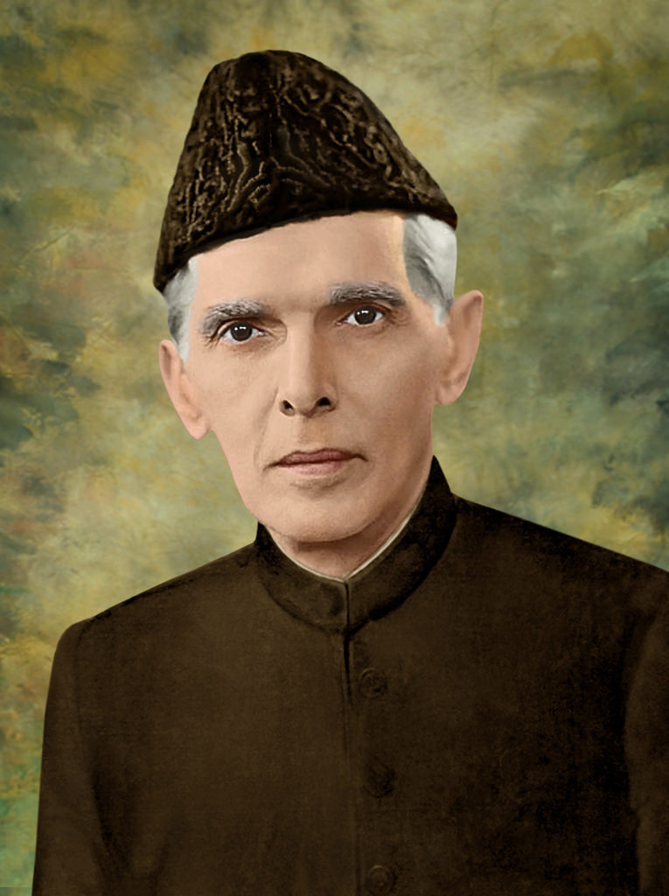

QUAID-E-AZAM
1876-1948
🏛️ About Quaid-e-Azam
Quaid-e-Azam Muhammad Ali Jinnah was the founder of Pakistan. He was a great leader, lawyer, and politician who struggled for the rights of Muslims in the subcontinent. He was born on 25 December 1876 and passed away on 11 September 1948.
📜 Short Biography
Quaid-e-Azam Muhammad Ali Jinnah was a prominent political leader and the founder of Pakistan. He played a crucial role in the creation of the Islamic republic of Pakistan and served as its first Governor-General. Jinnah was a skilled lawyer and an eloquent speaker who advocated for the rights of Muslims in the subcontinent.
🏆 Achievements
- Founder of Pakistan
- First Governor-General of Pakistan
- Leader of the All-India Muslim League
- Played a key role in the Pakistan Resolution (1940)
- Promoted unity among Muslims of the subcontinent
- Known for his strong leadership and determination
- Advocated for constitutional rights and democracy
- Gained international recognition as a great leader
💬 Quotes
"With faith, discipline and selfless devotion to duty, there is nothing worthwhile that you cannot achieve."
“Think a hundred times before you take a decision, but once that decision is taken, stand by it as one man.”
❤️ Why I Admire Quaid-e-Azam
I admire Quaid-e-Azam Muhammad Ali Jinnah for his unwavering dedication to the cause of Pakistan and his visionary leadership. He was a man of great integrity and courage who stood up for the rights of his people and worked tirelessly to achieve his goals. His legacy continues to inspire millions around the world.